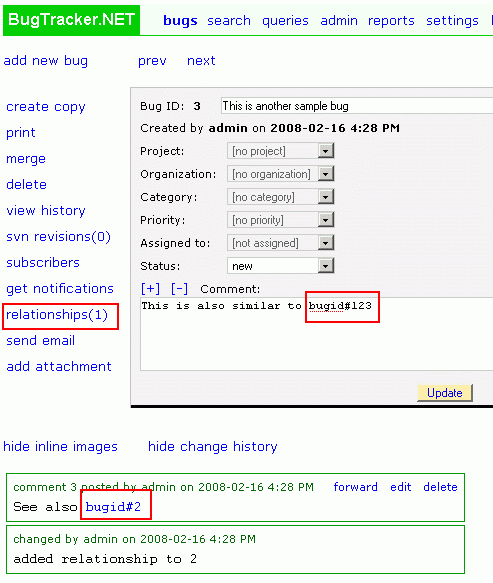

BugTracker.NET - Documentation table of contents
Bug relationships [back
to contents]
Please donate if BugTracker.NET is helping
your organization
There are two ways to create relationships between bugs:
1.Create hyperlinks to other bugs in your bug comments by using
the format bugid#999 where 999 is the number of the bug you want to link to.
2.Create relationships between bugs by clicking on the "relationships" link and accessing the "add
relationship page".
Creating relationship between bugs:

Clicking on "relationships" brings up this page: